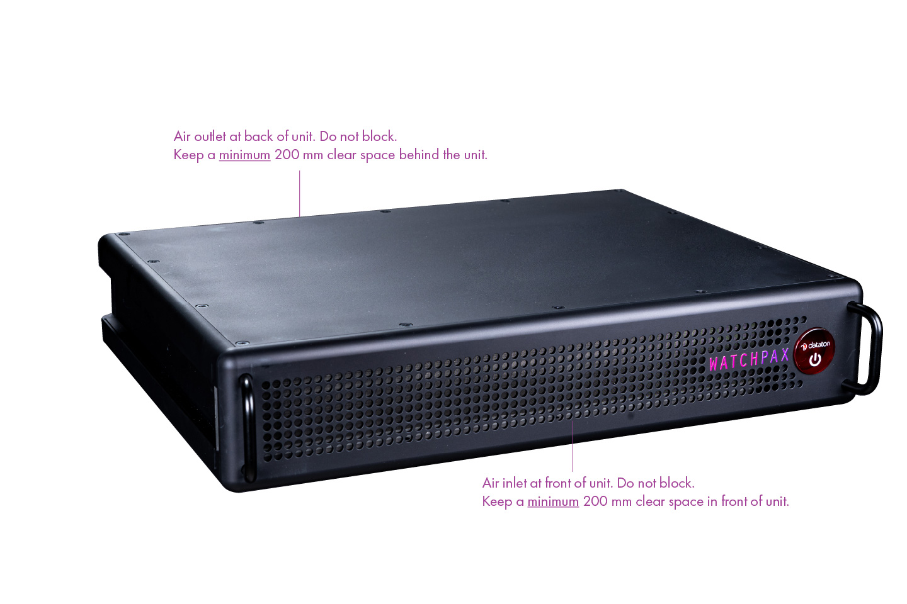

Ventilation
Airflow is critical for the correct operation of WATCHPAX 64. Do not block front or back of the unit. In any installation, there should always be a minimum of 200 mm clear space at front and 200 mm behind the unit.
The air filter can be manually removed from the unit for cleaning purposes. Recommended method for cleaning the filter is with a vacuum cleaner and/or by rinsing it with warm water. Make sure the filter is dry before reinserting it into the WATCHPAX 64.
